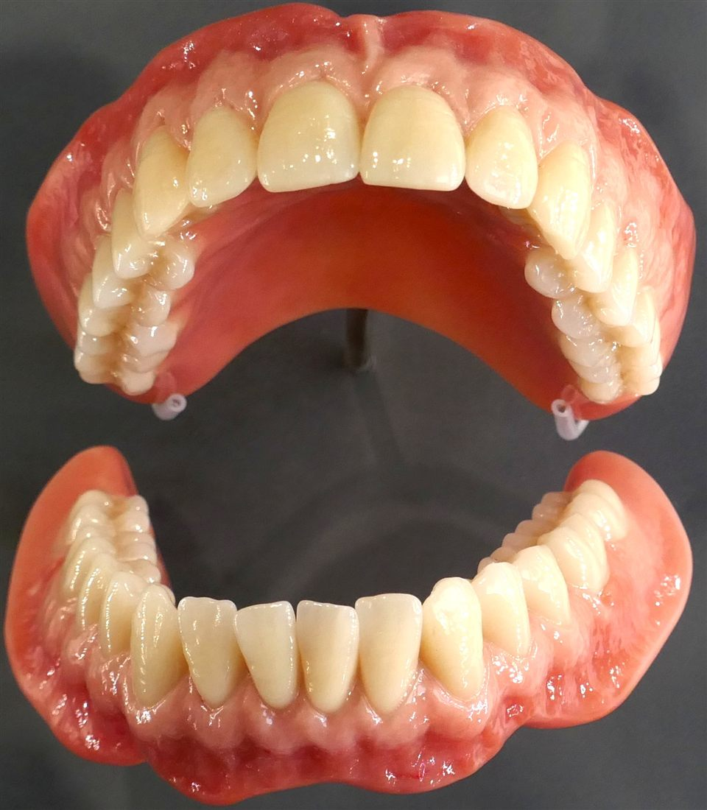
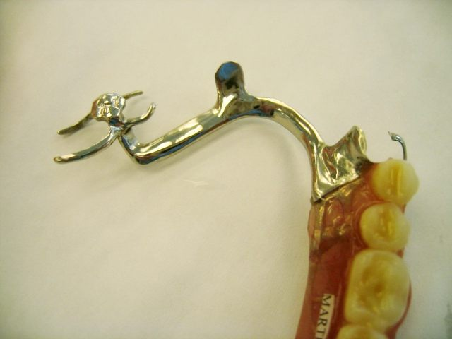
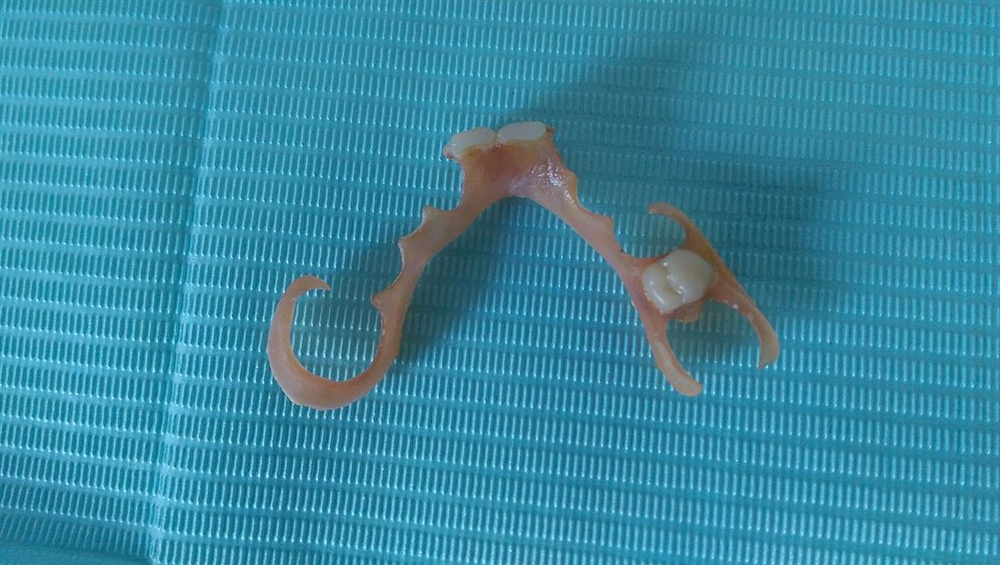
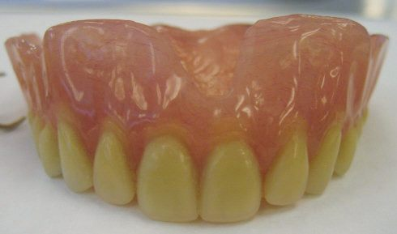
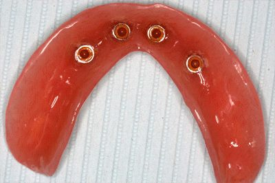
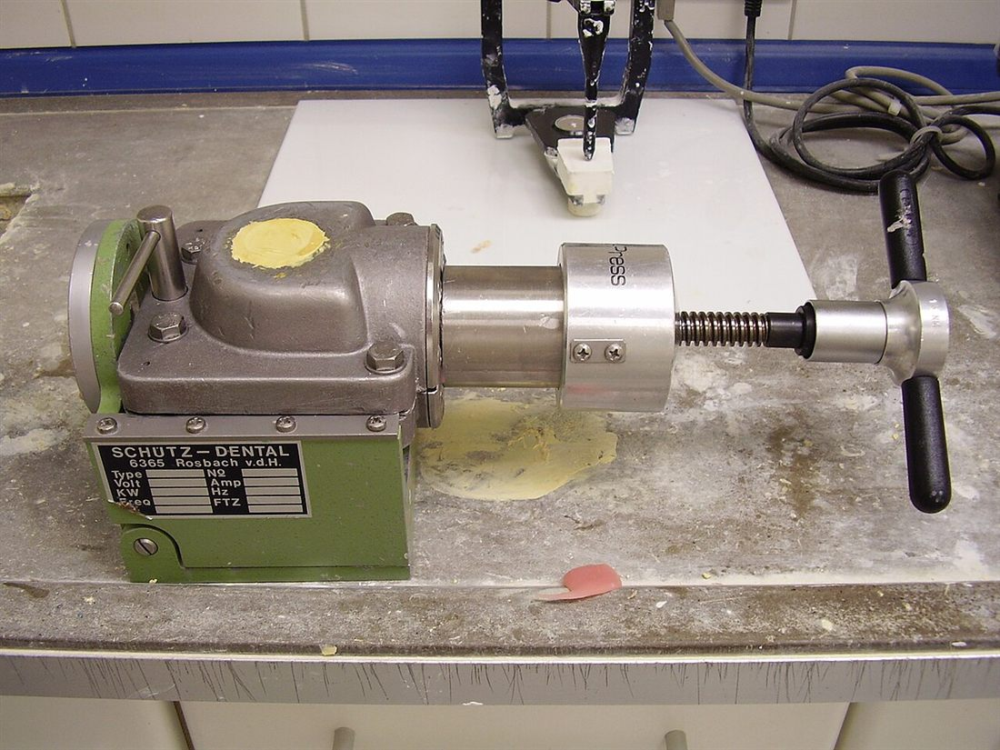

Services offered
Restorations tailored to
your personal needs
From your very first denture to a same-day repair, every plan starts with a conversation, not a sales pitch.

Complete Denture
Complete dentures are removable prosthetic devices used to replace all missing teeth in an arch, either the upper (maxillary) or lower (mandibular) jaw, or both. They are custom-made for each patient to ensure a proper fit, restore function, and improve aesthetics. The dentures consist of a gum-colored acrylic base that fits over the gums, with artificial teeth made from durable composite material. The main purpose of complete dentures is to help patients regain the ability to chew food properly, speak clearly, and maintain facial structure that may otherwise sag due to tooth loss. Proper care and regular adjustments by a dental professional are essential for ensuring comfort and long-term use of the dentures.

Partial Dentures
Partial dentures are removable prosthetic devices designed to replace one or more missing teeth in an arch while preserving the remaining natural teeth. There are two main types: acrylic partial dentures and cast-frame partial dentures. Acrylic partial dentures have a gum-colored acrylic base and are often more affordable but less durable, typically used as a temporary solution. Cast-frame partial dentures, on the other hand, are more durable and feature a metal framework that provides a secure fit and better longevity. Both types of dentures restore function by allowing the wearer to chew and speak more effectively, and they help maintain the alignment of natural teeth, preventing shifting due to gaps. Regular adjustments and proper care are necessary to ensure comfort and longevity.

Flexible Dentures
Flexible dentures are a lightweight, virtually invisible alternative to a traditional acrylic or metal-clasped partial. Made from a strong, flexible nylon resin, they're an ideal option for replacing one or two missing teeth, or a short span of teeth, without any visible metal clasps. The material gently flexes with the natural movement of your mouth and hugs the gum tissue for a comfortable, secure, and very natural-looking fit. Flexible dentures are lightweight, resist staining and odour, and are a popular choice for patients who want a discreet solution for a smaller gap in their smile.

Immediate Dentures
Immediate dentures are removable prosthetic devices that are placed in the mouth immediately after the extraction of natural teeth. These dentures are designed in advance so that patients do not have to go without teeth during the healing period after extractions. Immediate dentures help protect the gum tissue, promote healing, and allow patients to maintain their appearance and function while the gums and bone adjust. However, as the gums shrink and change shape during the healing process, immediate dentures may require frequent adjustments or relining to ensure a comfortable fit. They are typically a temporary solution until permanent dentures can be made after full healing has occurred.

Implant Overdentures
Implant overdentures are a type of removable denture that is supported and stabilized by dental implants anchored into the jawbone, also known as snap-on dentures. Unlike traditional dentures that rest on the gums, implant overdentures attach to implants, providing a more secure and stable fit. This improves comfort and functionality, allowing for better chewing, speaking, and overall confidence. The implants also help preserve the jawbone by stimulating bone retention, which is often lost with traditional dentures. Implant overdentures can be removed for cleaning, but they provide a much stronger, more natural feel compared to conventional dentures. Regular maintenance and periodic check-ups are essential to ensure the implants and overdentures remain in optimal condition.

Reline, Rebase & Repairs
Repairs and relines are essential maintenance procedures for dentures to ensure they remain functional, comfortable, and properly fitted over time. Repairs are needed when dentures become damaged or cracked, which can occur due to wear and tear or accidents. A dental professional can fix the damage, restoring the denture's structure and function. Relines, on the other hand, involve reshaping the inner surface of the denture to accommodate changes in the gums and bone structure, which naturally occur over time. This process helps improve the fit, reducing discomfort and slippage. Both repairs and relines are important for prolonging the life of dentures and maintaining oral health, requiring regular check-ups to determine when they are needed.
Photo credits (Wikimedia Commons): complete denture photo © Tiia Monto, CC BY 4.0; partial & immediate denture photos public domain (DRosenbach); flexible denture photo © Matthew Ferguson 57, CC BY-SA 4.0; implant overdenture photo © Ian Furst, CC BY-SA 3.0; reline/repair lab photo public domain (Werneuchen).

Coverage & cost
We accept CDCP at both our Steveston and New Westminster clinics.
The Canadian Dental Care Plan (CDCP) helps pay a large portion of the cost for a wide range of oral health services, including complete dentures, denture repairs, relines and rebases, tissue conditioning, and complete immediate dentures. Please check if you qualify — note that only a portion of the cost is covered, and patients are expected to pay the remaining difference.
Before we can give you an accurate quote, we'll examine your denture and oral cavity in person during a free, no-obligation consultation, so you get the most precise price for your situation.